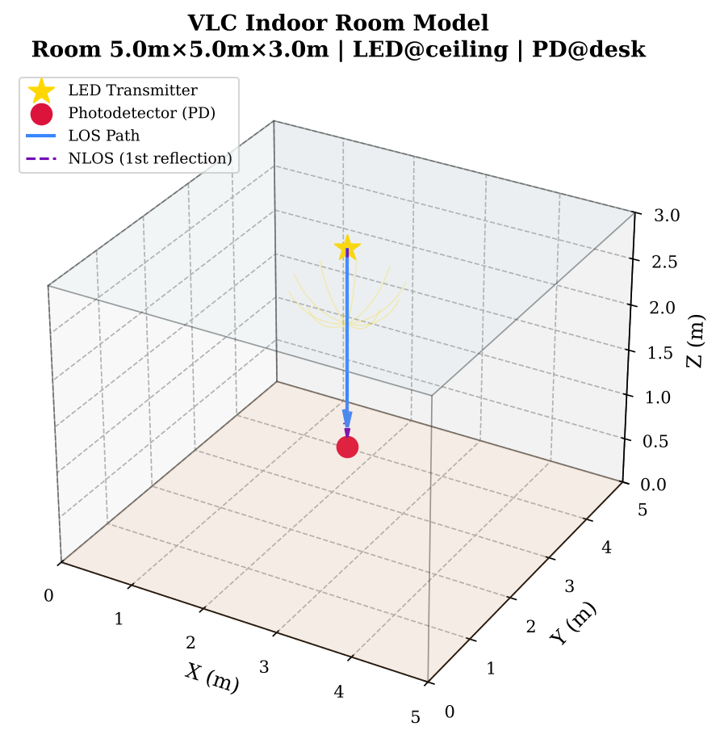
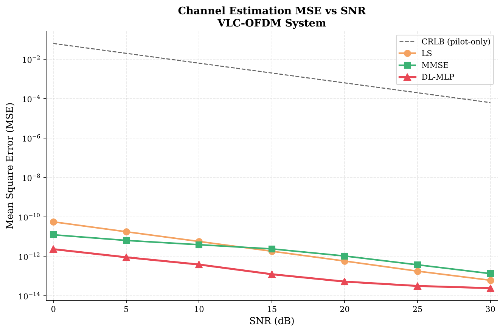

Deep-Learning Channel Estimation for Indoor Visible Light Communication with OFDM
Abstract
Visible light communication (VLC) reuses room lighting for data, and orthogonal frequency-division multiplexing (OFDM) copes with the low-pass response of the light-emitting diode (LED). The receiver still has to estimate the channel. We train a five-layer perceptron on 4,000 simulated channels of a m room and compare it with least-squares (LS) and linear minimum mean-square error (MMSE) estimation. At 20 dB the network lowers the estimation error by 10.4 dB with respect to LS, and its bit error rate (BER) of equals that of a receiver with perfect channel knowledge.
1 Introduction
LED lighting can carry data at the same time as it lights a room (Komine and Nakagawa 2004; Elgala, Mesleh, and Haas 2011). Because the LED acts as a low-pass filter, VLC systems commonly use OFDM, which turns the dispersive channel into many flat subchannels (Armstrong 2009). Pilot-based estimation of those subchannels is well understood for radio links (Coleri et al. 2002), and neural estimators have been shown to help when the classic assumptions do not hold (Ye, Li, and Juang 2018; Soltani et al. 2019). This report measures how much a small network helps in an indoor VLC link, and where the linear MMSE estimator fails.
2 System Model
The LED sits at the centre of the ceiling and the photodiode at desk height (Fig. 1). The line-of-sight gain follows the Lambertian model (Kahn and Barry 1997),
| (1) |
where is the Lambertian order, the detector area and the distance. First reflections from the walls and the 3 MHz bandwidth of the LED complete the frequency response. Each OFDM symbol has 64 subcarriers with a pilot on every fourth one.

3 Estimators
LS divides each received pilot by the transmitted one and interpolates between pilots. MMSE weights the LS estimate with the channel correlation and a design signal-to-noise ratio (SNR), fixed here at 15 dB. The deep learning (DL) estimator is a perceptron with layers of 512, 256, 256, 128 and 64 units, trained with Adam (Kingma and Ba 2015) on channels from random positions and SNRs between 0 and 30 dB, as listed in Table 1.
| Room | m |
| LED semi-angle | |
| Subcarriers / pilots | 64 / 16 |
| Modulation | QPSK |
| Training set | 4,000 channels |
4 Results
Fig. 2 shows the estimation error. At 20 dB the DL estimate is 10.4 dB better than LS. The MMSE estimator is better than LS near its design SNR, but above it the wrong noise assumption makes it worse than LS.

The BER follows the same pattern (Fig. 3). At 20 dB the DL receiver reaches , against for LS, which is 18 times fewer errors, and the same value as a receiver that knows the channel exactly.

5 Conclusion
A small network trained across the full SNR range removes the estimation loss of an indoor VLC-OFDM link in this simulation, while MMSE with a fixed design SNR degrades above it. The study is limited to one room, one LED and simulated channels; a measured testbed is the next step.